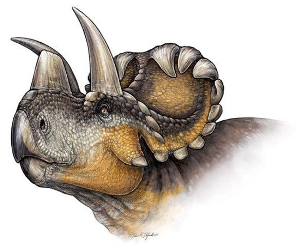

El Triceratops fue un dinosaurio perteneciente a la familia de los ceratopsianos ceratópsidos, que habitó la tierra durante el periodo Cretácico superior entre 68 y 65 millones de años atrás aproximadamente en el territorio que hoy conocemos como Norteamérica, en la cultura popular es uno de los dinosaurios más conocidos apareciendo el mismo de manera recurrente en los grandes medios de difusión masivo .
El Triceratops fue un dinosaurio herbívoro debido a su gran envergadura necesitaba de grandes cantidades de alimento para su supervivencia, se cree que su dieta estaba compuesta en plantas de bajo tamaño, frutas, palmeras y helechos.
